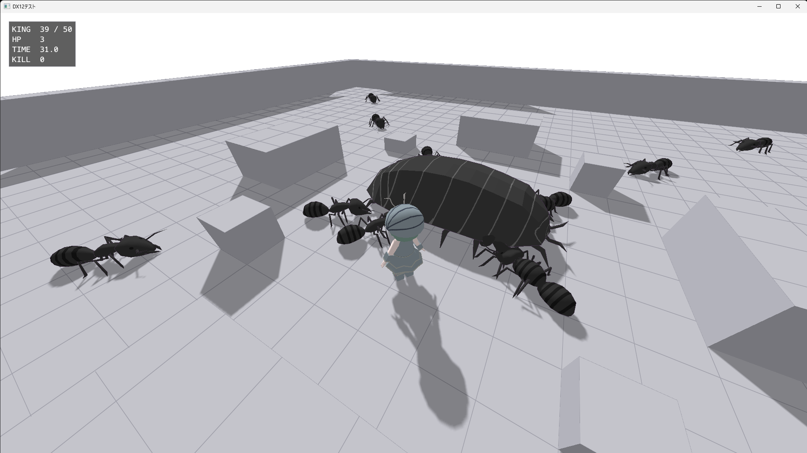
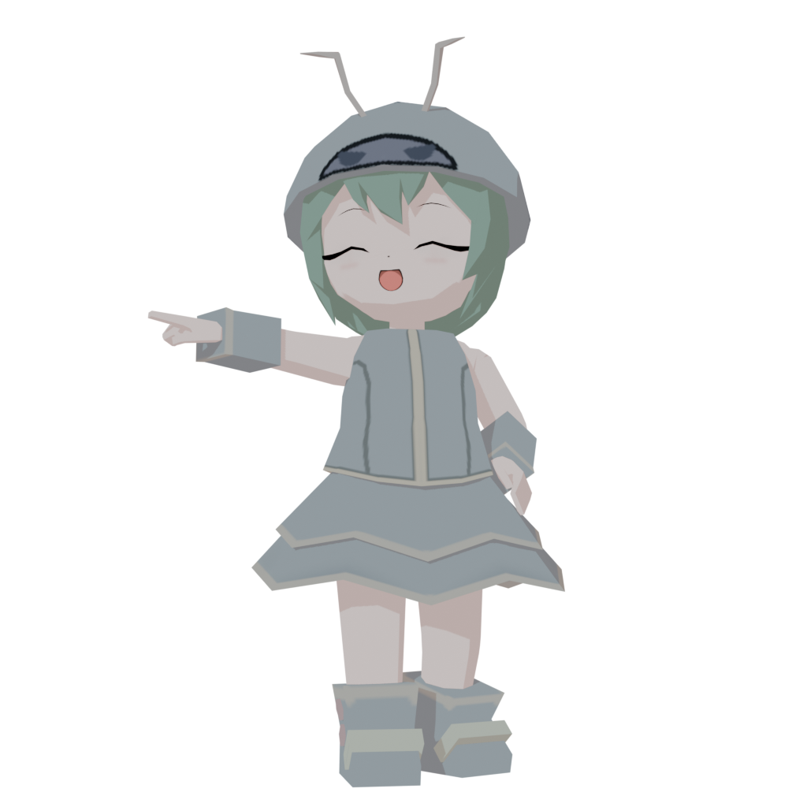
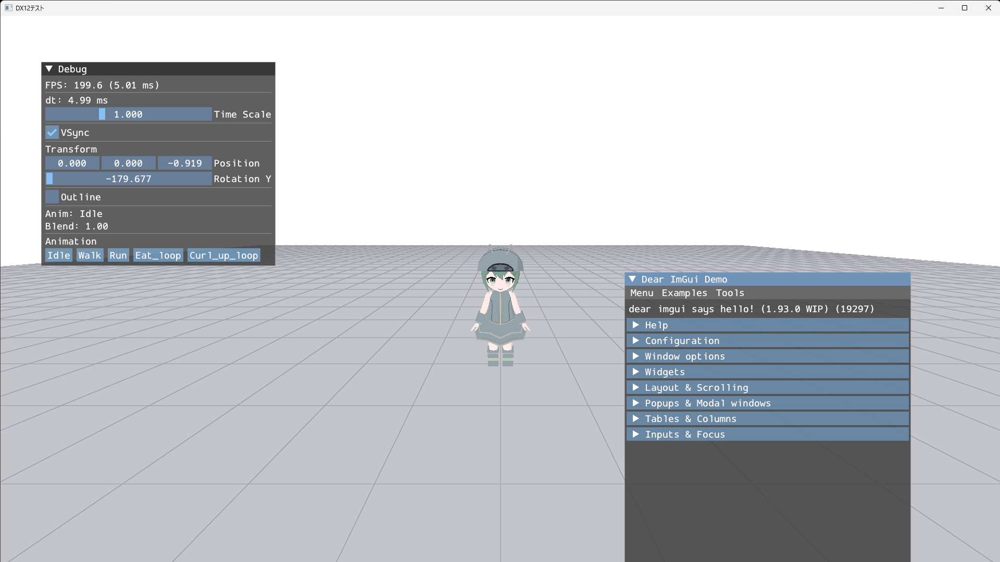
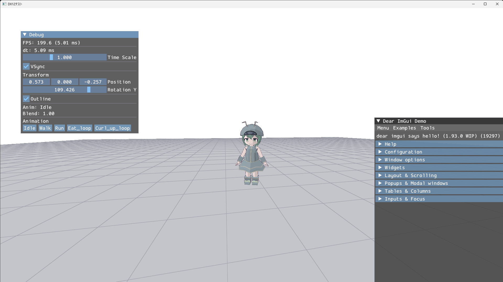
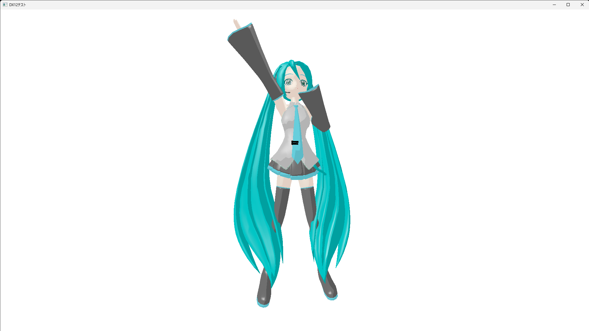

DirectX12Renderer
DirectX 12の学習のために、ゲームエンジンを使わず1から書いている自作レンダラーです。
ウィンドウを出すところから始めて、画面のクリア、三角形・四角形の描画、テクスチャ、
3Dモデルの読み込みと、順番に積み上げてきました。
そしてこのレンダラーの上に、3Dアクションゲーム
「DANGO DEFENSE」を作って一通り遊べる形まで持っていきました。
Blenderで自作したモデルを使い、描画も当たり判定もゲームの仕組みも、
DirectXTex / cgltf / Dear ImGui以外はすべて自分で書いています。
言語はC++20、APIはDirectX 12（Direct3D 12 / DXGI / DirectXMath / HLSL）です。

▲ プレイ中の画面。中央の大きなダンゴムシが守る対象の「王」で、
四隅の巣穴からアリが湧いてきます。
左上に王の体力・自分の体力・経過時間・討伐数を表示しています。

▲ 操作キャラクターは自作モデル（Blender / Substance Painterで制作）。
FingerGuiderのために作ったちびキャラで、
待機・歩き・走り・食事・丸まりのアニメーションが入っています。
王のダンゴムシとアリも、このゲームのために自分でモデリングしました。
中央にいる「ダンゴムシの王」を、四隅の巣穴から湧いてくるアリの群れから守るゲームです。
王が倒されるとゲームオーバーで、守り切った時間と倒したアリの数がスコアになります。
時間が経つほどアリの湧く間隔が短くなっていくので、
いつかは必ず押し切られます。どこまで粘れるかを競う形です。
【操作】
・W / A / S / D：カメラから見た方向へ移動
・Shift（押しながら）：走る
・Space：ジャンプ（タイトル画面ではゲーム開始）
・マウス左クリック：攻撃（アリは2回当てると倒せます）
・マウス右ドラッグ：カメラを回り込ませる
・R：結果画面からリスタート
・F1：デバッグメニューの表示 / 非表示
アリは基本的に王へ一直線に向かいますが、
こちらが攻撃すると一定時間だけプレイヤーを狙ってきます。
引き付けて処理するか、王の前で迎え撃つかの判断が、この操作の中心になるよう調整しました。
ステージには壁と足場があり、ジャンプで登れます。
ここまでに実装した内容です。
【DirectX 12の基礎】
・ウィンドウの生成とDirect3D 12デバイスの初期化
・コマンドリスト／コマンドキュー／スワップチェーンによる画面クリア
・リソースバリアによる状態遷移
・頂点バッファ・インデックスバッファを用いたポリゴンの描画
・ルートシグネチャ／ディスクリプタヒープ／シェーダーリソースビューによるテクスチャ貼り付け
・画像ファイルの読み込み（DirectXTex）
・定数バッファと行列による座標変換（ワールド・ビュー・プロジェクション）
・深度バッファ
【PMDモデル（書籍で学んだところ）】
・PMDモデルの読み込みとマテリアルごとの描画
・トゥーンシェーディング／スフィアマップ（乗算・加算）／スペキュラ
・ボーンによるスキニング
・VMDファイルの読み込みとキーフレームアニメーションの再生（ベジェ曲線による補間）
【glTF（自作モデルの表示）】
・cgltfによる.glbの読み込みと描画（埋め込みテクスチャ、アルファブレンド）
・スキニング（ノード階層、逆バインド行列、4ボーンのブレンド）
・アニメーションの再生とブレンド（クロスフェード、回転は球面線形補間）
・モデルとアクターの分離（データを共有して同じモデルを何体も出す）
【描画】
・トゥーンシェーダー（ハーフランバートの階調量子化）
・輪郭線の描画（法線方向への押し出しによる背面法）
・マルチパスレンダリング（オフスクリーンのテクスチャへ描いてから画面へ転送）
・シャドウマップによる影（比較サンプラーによるPCF、プレイヤーへの追従）
・地面とステージの足場の描画（影と陰影の計算を共通化）
【ゲームの仕組み】
・デルタタイムによるフレームレート非依存の更新（タイムスケール、VSyncの切り替え）
・入力の管理（「押している間」と「押した瞬間」の区別、マウスの移動量）
・三人称カメラ（対象への追従、マウスでの回り込み）
・重力とジャンプ（到達したい高さから初速を求める、接地判定）
・当たり判定（球同士、球と直方体、押し戻しの重み付け）
・敵の追跡AI（状態遷移、ヒステリシスによる検知、障害物の回避）
・攻撃と体力（判定が出ている時間、多段ヒットの防止、ノックバック、無敵時間）
・敵のオブジェクトプールと、時間経過で間隔が縮むスポーン
・ヘイトによる標的の切り替え
・ゲームの流れ（タイトル → プレイ → 結果 → リスタート）とスコアの集計
・調整値の一元管理とDear ImGuiによるデバッグUI
最初はすべてmain関数に書いていましたが、行数が増えて読みづらくなってきたので、
役割ごとにクラスへ切り出しました。
【描画まわり】
・Application：ウィンドウとメッセージループ、各オブジェクトの所有、ゲーム全体の進行
・Dx12Wrapper：デバイス、スワップチェーン、コマンド関連、フェンス、
レンダーターゲット、深度バッファ、シャドウマップ、シーン共通の定数バッファ
・GltfRenderer：ルートシグネチャとパイプラインステート（通常・半透明・輪郭線・影）
・GltfModel：.glbから読み込んだ頂点・テクスチャ・アニメーションのデータ
・GltfActor：1体ぶんの位置・向き・再生状態と、描画
・Ground / Stage：地面と足場の箱
・Pera：マルチパスレンダリングの2パス目に使う、画面いっぱいの板ポリ
【ゲームまわり】
・CharacterController：キャラクターの「体」。速度・重力・接地・当たり判定
・Player / Enemy / King：キャラクターの「判断」。今どの状態で、次に何をするか
・EnemyPool：アリを使い回すための入れ物
・Spawner：巣穴1つぶん。一定間隔でアリを出す
・Collision：球と球、球と直方体の判定
・GameConfig：ゲームバランスの調整値をまとめた場所
・Camera / Input / GameTimer / DebugUI
今回いちばん考えたのが、キャラクターを
「見た目（GltfActor）」「体（CharacterController）」「判断（Player / Enemy / King）」の
3つに分けたことです。
こうしておくと、重力や押し戻しの処理はプレイヤーも敵も王も同じコードで済み、
「全員ぶんをまとめてループで回す」形にできます。
違うのは判断の部分だけなので、アリを別の敵に差し替えるのも、
動かない王を「ただ殴られるだけのキャラクター」として同じ仕組みに乗せるのも簡単でした。
ゲームにするうえで最初に必要になったのが、同じモデルを何体も表示することでした。
それまでは1つのクラスが「モデルのデータ」と「今の位置やポーズ」の両方を持っていたので、
アリを30匹出すと、同じ頂点バッファとテクスチャを30組もGPUに置くことになります。
そこで、読み込んだデータそのもの（頂点・インデックス・テクスチャ・
ボーンの構造・アニメーション）をGltfModelへ移し、
1体ごとに変わる位置・向き・再生中のアニメーションだけをGltfActorが持つようにしました。
アリが何匹いても、モデルのデータはGPU上に1組だけです。
さらに、アリは出たり消えたりを繰り返すので、
湧くたびに作っていると、その瞬間だけ処理が重くなってしまいます。
あらかじめ30体ぶん作っておいて「使用中かどうか」の印だけを切り替える形にして、
ゲーム中はメモリの確保をしないようにしました。
キャラクターが地面に影を落とすと、一気にゲームらしく見えるようになりました。
仕組みとしては、まず光源から見た位置にカメラを置いて、
色ではなく「光源からの距離」だけをテクスチャに描きます。
次に本番の描画で、各ピクセルを光源から見た座標に変換し、
そのテクスチャに書かれている距離より遠ければ「手前に何かがある＝影」と判断します。
そのため描画は3つのパスになりました。
・0パス目：光源から見た深度をシャドウマップへ描く
・1パス目：オフスクリーンのテクスチャへシーンを描く（影の判定はここで行う）
・2パス目：そのテクスチャを画面いっぱいの板ポリに貼って表示する
影の縁がギザギザにならないよう、シャドウマップは1点ではなく3×3の9点を調べて
「9点のうち何点が影か」で明るさを決めています。
比較サンプラーを使うと、この「深度の比較」をGPU側でまとめてやってくれます。
影の範囲はプレイヤーに追従させています。
ステージ全体を1枚のシャドウマップでカバーすると影が粗くなるので、
プレイヤーの周りだけを高い密度で描く形にしました。
キャラクター同士は球で判定しています。
重なっていたら、重なっているぶんだけ水平方向に押し戻します。
上下に押し戻さないのは、押し合った拍子に相手の上へ乗り上げてしまうからです。
押し戻すとき、両者を同じだけ動かすと、アリの群れに囲まれたプレイヤーが
弾き飛ばされてしまいます。
そこで「押されにくさ」の重みを持たせ、動かない王はまったく押されず、
プレイヤーはアリより押されにくい、という配分にしました。
ステージの足場は回転しない直方体なので、各軸の範囲を比べるだけで判定できます。
ここで学んだのが、「床に乗る」と「壁に当たる」を分けて考えることでした。
最初は箱との重なりをまとめて解消していたのですが、
それだと足場の角に立ったときに横から押し出されたり、
逆に壁に当たった勢いで上へ乗り上げたりします。
足元の真下を見て床の高さを決める処理と、水平方向に押し戻す処理を分けたところ、
どちらも安定しました。
ジャンプは、重力の強さと「到達したい高さ」から初速を逆算しています。
こうしておくと、調整するときに「1.2m跳びたい」と書けるので分かりやすいです。
それでも他のキャラクターに押し込まれて箱へめり込むことがあったので、
毎フレーム最後に「めり込んでいたら一番近い面から押し出す」という保険を入れています。
アリは「待機 / 追跡 / 攻撃 / のけぞり / 撃破」の状態を持っていて、
同時に成立するのは必ず1つだけ、という形にしています。
状態を切り替える場所を1か所にまとめると、
アニメーションの切り替え忘れのようなミスが起きにくくなりました。
気づく距離と見失う距離は、わざと別の値にしています。
同じ値にすると、ちょうど境目にいるときに追跡と待機が毎フレーム入れ替わって、
その場で震えてしまうためです。
アリは基本的に王を狙いますが、プレイヤーに殴られると
一定時間だけ標的がプレイヤーに切り替わります。
これを入れたことで、「とりあえず殴って引き付ける」という遊び方ができるようになりました。
困ったのが、壁に向かって歩き続けて止まってしまうアリでした。
経路探索を入れるほどの規模ではないので、
「進もうとした量に対して実際に進めた量が少なければ詰まっている」とみなして、
しばらく横へ逸れる、という簡単な回避にしています。
単純ですが、見た目には十分それらしく動いてくれました。
タイトル → プレイ中 → 結果画面、という流れも状態として持たせています。
タイトルと結果画面では王の周りをカメラがゆっくり回るようにしました。
ゲームバランスの調整値は、あちこちに数字を散らかすとどこを触ればいいか
分からなくなるので、GameConfigという1つのファイルにまとめました。
アリの体力、攻撃の判定が出る時刻、湧く間隔、スコアの配点などは、
すべてここを見れば分かるようにしてあります。
そのうえで、実際に遊びながら変えたいもの
（アリの速さ、湧く間隔、王の体力）はデバッグUIから直接いじれるようにしました。
ビルドし直さずに難易度を試せるので、調整がかなり楽になりました。

▲ F1キーで出せるデバッグメニュー。フレームレートやゲーム内時間の倍率のほか、
光源の向き、影の範囲、ジャンプの高さ、当たり判定の半径などをその場で変更できます。
（ゲームを載せる前、モデルを表示していた頃の画面です）
DirectX 12はDirectX 11と違って、GPUに渡すリソースの置き場所を
自分で設計しないといけないのが最初の壁でした。
このレンダラーでは、シェーダーに渡すものを次のように割り当てています。
・b0：シーン共通のもの（ビュー・プロジェクション・視点座標・光源の情報）
・b1：ワールド行列とボーン行列（256本ぶん）── アクターごとに1つ
・b2：マテリアル（ベースカラー係数）── マテリアルごとに1つ
・t0：ベースカラーのテクスチャ ／ t1：シャドウマップ
b0はシーン中で1つですが、b2とt0はマテリアルの数だけ必要になります。
そこでディスクリプタヒープには「CBV1つ＋SRV1つ」を1セットとして
マテリアルの数だけ並べ、描画時はインデックスバッファのオフセットと
ディスクリプタの位置を同時にずらしながら、マテリアル単位で描いています。
glTFはメッシュがマテリアルごとに「プリミティブ」へ分割されているので、
全部の頂点とインデックスを1本のバッファに詰めたうえで、
プリミティブごとに描画範囲（開始位置と個数）を記録して個別に描いています。
自作モデルを出すために、PMDに代わってglTF（.glb）を読み込むようにしました。
パースにはcgltfという1ファイルのライブラリを使っています。
一番苦労したのが座標系です。
glTFは右手系、こちらの描画は左手系なので、読み込むときにすべて変換する必要があります。
・位置・法線・平行移動：zの符号を反転する
・クォータニオン：回転軸が鏡映されるのでxとyが反転する
・4x4行列：行と列の「どちらか一方だけ」がzの要素を符号反転する
・インデックス：面の裏表が反転するので、三角形の巻き順を入れ替える
怖いのは、頂点と法線だけ変換してノード階層やアニメーションの変換を忘れても、
棒立ちのバインドポーズでは何も起きず、アニメーションを再生して初めて破綻することです。
実際にこれで一度ぐちゃぐちゃになったので、変換は3つの関数に集約して
「新しいデータを読み込むときは必ずここを通す」と決め、コメントにも残しました。
またzを反転した結果モデルの正面が-Zを向いてしまうので、
読み込み側でπだけ回す補正を入れ、ゲーム側のコードでは
「向きが0なら+Zを向いている」と素直に扱えるようにしています。
モデルの頂点は、それぞれ「どのボーンにどれくらい影響されるか」の情報を持っています。
glTFでは4本ぶんのボーン番号とウェイトが入っているので、
頂点シェーダー側で4つのボーン行列をウェイトで混ぜ合わせ、頂点を追従させています。
ボーン行列は、ノードの親子関係をたどってグローバル変換を積み、
逆バインド行列と合成して作ります。
ここで引っかかったのが、glTFのノード配列は
「親が子より先に並んでいる」保証がないことです。
配列の順に計算すると、親がまだ更新されていない状態で子を計算してしまうので、
最初にルートから深さ優先でたどった順序を作っておき、毎フレームその順に計算しています。
アニメーションは、ノードごとの「位置・回転・スケールを時刻で動かす」チャンネルの集まりです。
現在時刻を挟む2つのキーを探して、回転はクォータニオンの球面線形補間、
位置とスケールは線形補間でつなぎます。
歩きから走りへ切り替えたときにパッと切り替わるのが気になったので、
アニメーションのブレンドも入れました。
切り替えの瞬間に前のアニメーションを「移行元」として残しておき、
0.2秒かけて2本を同時にサンプリングし、ノードの位置・回転・スケール単位で混ぜています。
ポーズそのものを混ぜているので、途中で何度切り替えても破綻しません。
自作モデルはアニメ調の見た目にしたかったので、シェーダーを自分で書き直しました。
ピクセルシェーダーでは、ライトと法線の内積をそのまま明るさにするのではなく、
ハーフランバート（-1〜1を0〜1に写し直す）にしてから4段階に量子化しています。
生の内積のままだと裏側がすべて0に潰れてしまい、影側に階調を作れないためです。
段の境目はsmoothstepでほんの少しだけなめらかにして、
ジャギーが目立たないようにしています。
輪郭線は、モデルをもう一度、法線方向へ少しだけ押し出して
表面をカリングしながら暗い色で描く「背面法」です。
ここで2つハマりました。
ひとつは、輪郭線も本体と同じボーン行列でスキニングしないといけないこと。
忘れるとアニメーション中に輪郭線だけがバインドポーズに取り残されます。
もうひとつは、フラットシェーディングのモデルだと輪郭線が継ぎ目で裂けることです。
フラットな面は同じ座標に複数の（別々を向いた）法線が割り当てられているので、
そのまま押し出すと押し出した面がバラバラに広がってしまいます。
そこで、位置が同じ頂点の法線を平均したものを
「押し出し専用の法線」として別に持たせるようにしました。
シェーディングに使う法線は元のままなので、フラットな見た目は保たれます。

▲ 輪郭線を有効にした状態。モデルの縁やスカートの境目、
頭のアンテナのような細い部分にも線が乗っています。
glTFに移る前は、書籍にならってPMD形式のモデルを描画していました。
トゥーンシェーディングやスフィアマップを効かせつつ、
VMDファイルのモーションに合わせて踊らせるところまで実装しています。
VMDはキーフレームごとにベジェ曲線の補間パラメーターを持っているので、
単純な等速の補間ではなく、ベジェ曲線からxに対応するyを求めて補間の割合に使いました。
これを入れると、動きの緩急がMMDで再生したときと同じになります。
ここで身につけた「スキニングとキーフレーム補間の考え方」が、
そのままglTF側の実装に生きています。
コードはPMDActor／PMDRendererとして今も残してあります。

▲ PMDモデルを読み込み、VMDファイルのモーションを再生している様子。
トゥーンシェーディングによる段階的な陰影と、ボーンによるスキニングが効いています。
※ スクリーンショットに使用している3Dモデルは、MikuMikuDance（樋口優氏）に同梱されている
「初音ミク ver.1.3」モデルです。
モデリング：あにまさ氏 ／ データ変換：京 秋人氏 ／ Copyright：CRYPTON FUTURE MEDIA, INC
※ モデルデータは本サイトおよびGitHubリポジトリでは配布していません。
※ キャラクター「初音ミク」は クリプトン・フューチャー・メディア株式会社 の著作物であり、
ピアプロ・キャラクター・ライセンスに基づく非営利の利用です。
© Crypton Future Media, INC. www.piapro.net
【カメラを動かすと影の縁がチラチラする】
影の範囲をプレイヤーに追従させたら、今度は歩くたびに影の縁のドットが
入れ替わってチラつくようになりました。
光源カメラが半端な位置にあると、シャドウマップの格子が毎フレームずれるためです。
光源から見た座標系で位置をテクセル単位に丸めてから戻すようにして、
格子が常に同じ場所に来るようにしたら収まりました。
【アリに押されて壁をすり抜ける】
アリに囲まれたプレイヤーが、押し出された勢いで足場の中へ入ってしまうことがありました。
押し戻しの順番を整理したうえで、最後に「めり込んでいたら
一番近い面から出す」という処理を入れて対処しました。
【ファイル構造体のサイズが1バイトでもずれると全部壊れる】
PMDやVMDはファイル上のバイト列をそのまま構造体に読み込みます。
ところがC++の構造体は勝手にパディングが入るため、
そのまま読むとサイズがずれて、それ以降の読み込みが全滅します。
#pragma pack(1)でパディングを止めたうえで、
static_assertで構造体のサイズをコンパイル時に検査するようにしました。
【行列の掛ける順番が逆になる】
HLSL側は既定で列優先なので、C++側で考えていた順番と
シェーダー内での掛ける順番が逆になります。
ここを間違えるとモデルが消えたり、あらぬ方向へ吹き飛んだりして、
原因を探すのに一番時間を使いました。
【ディスクリプタヒープは同時に1本しかバインドできない】
CBV_SRV_UAVのディスクリプタヒープは同時に1本しか設定できず、
切り替えるとそれ以前に設定したディスクリプタテーブルは無効になります。
そのためアクターごとにヒープを持たせ、描画のたびに設定し直しています。
シャドウマップのビューも、各アクターのヒープの中に作りました。
ゲームとして一通り成立したので、次は中身を厚くしていきたいです。
・攻撃のバリエーションや、アリ以外の敵
・ポストエフェクト（マルチパスの土台はできているので、そこに処理を挟む形）
・経路探索を入れて、敵の動きをもう少し賢くする
・音を鳴らす
描画側では、複数のモデルをまとめて描く仕組みや、
描画命令の数を減らす工夫にも手を付けたいと考えています。
・言語：C++20
・IDE：Visual Studio 2026（プラットフォームツールセット v145）
・プラットフォーム：x64 / Windows 10・11
・API：Direct3D 12 / DXGI / DirectXMath / HLSL
・ライブラリ：DirectXTex（画像読み込み） / cgltf（glTF読み込み） / Dear ImGui（デバッグUI）
・モデル制作：Blender / Substance Painter
学習にあたっては「DirectX
12の魔導書 3Dレンダリングの基礎からMMDモデルを踊らせるまで」を参考にしています。
ソースコードはMIT Licenseで公開しています。
ただし同梱している自作モデル（DangoGirl.glb）はMIT Licenseの対象外で、
動作確認用に置いているものなので、転載・再配布・改変はご遠慮ください。
また、リポジトリには再配布が許可されていないアセット（PMDモデルやVMDモーション）は
含めていません。動かす場合はREADMEの手順に沿って各自でご用意ください。